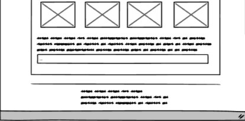
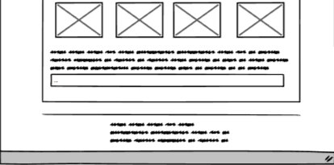
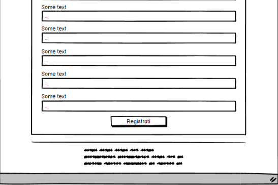
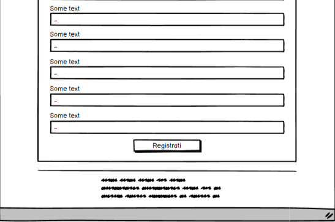

Struttura e layout
1. Architettura del sito
Fig.1 - Architettura del sito
La Fig.1 rappresenta graficamente l'architettura del sito: il rettangolo blu indica la home page; i rettangoli viola mostrano le pagine secondarie; i rettangoli azzurri specificano le sottocategorie in cui le pagine viola si suddividono; infine, nel footer, troviamo anche il riferimento ad una pagina esterna (instagram, sfondo grigio).
2. Wireframe
Fig.2 - Homepage
 

Fig.3 - Servizi
 

Fig. 4 - Community

Fig. 5 - Documentazione
3. Look and feel
Cercando di superare uno dei punti critici del primo competitor analizzato, la grafica di DJ SET IT è volutamente essenziale. In primo luogo, è stato realizzato il logo con Canva; poi, da questo, sono state ricavate le due tonalità principali (#024873 e #601A35), richiamate in vari elementi. Inoltre, lo sfondo nero permette di focalizzarsi maggiormente sui contenuti delle varie box. Questa gammatura di colori, unita alla presenza di scritte luminose e immagini vivide, vuole volontariamente richiamare la percezione di immersione nelle luci e nei colori che si stagliano sul buio delle stanze da discoteca.
I font utilizzati sono “Prompt” per il body e “Lastrica” per i titoli delle pagine e la mappa ad albero.
Tutte le fotografie sono state fornite da Davide Taglini, un giovane fotografo della città di Reggio Emilia.
I font utilizzati sono “Prompt” per il body e “Lastrica” per i titoli delle pagine e la mappa ad albero.
Tutte le fotografie sono state fornite da Davide Taglini, un giovane fotografo della città di Reggio Emilia.